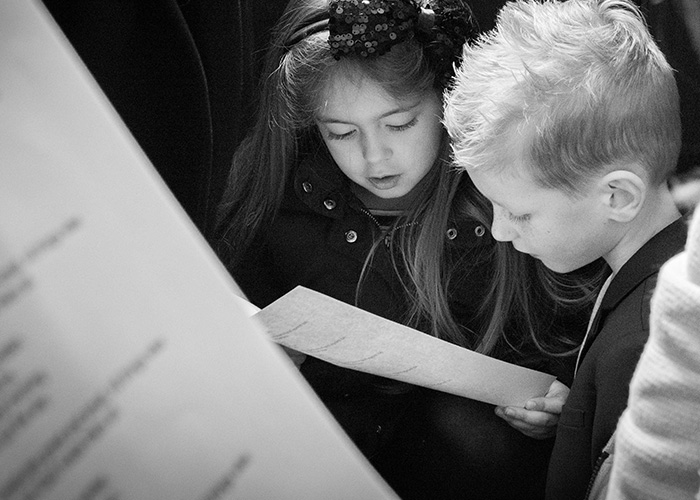
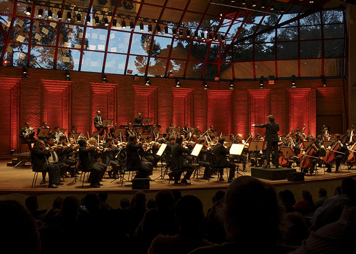

HOME
> 장학사업 >
음악장학제도
음악장학제도
금호문화재단은 한국 클래식 음악계의 미래를 위해
음악영재를 발굴하고 그들을 지원하고 있습니다
01

금호 콘서트 시리즈
금호문화재단은 한국 클래식 음악계의 미래는 차세대 음악 영재의 발굴과 지원에 달려있다는 믿음 아래, 뛰어난 실력을 갖춘 전도유망한 어린 음악인들을 선발하여 이들의 데뷔 무대를 마련해주고 있습니다.
금호 콘서트 시리즈는 매주 토요일 오후 3시와 8시에 금호아트홀 연세에서 열리며, 매년 5월과 10월 두 차례의 오디션을 통해 연주자를 선발하고 있습니다.
02
금호악기은행 제도
금호문화재단은 1993년부터 명품 고악기를 구입하여 장래가 촉망되는 젊은 연주자들이 값비싼 악기에 대한 걱정없이 오직 연주에만 몰두할 수 있도록 금호악기은행 제도를 마련하여 악기를 무상 대여하고 있습니다
-
- CHELLO
- 1
-
- PIANO
- 6
-
- VIOLIN
- 8
03

대외활동 지원
금호문화재단은 재단을 통해 발굴된 음악 영재들 가운데 최고의 실력을 갖춘 연주자들의 성장과정에 동반하며, 이들이 훌륭한 연주자로 성장하는데 필요한 활동들을 지원해오고 있습니다.
- 국내외 연주 기회 제공 및 계약서 체결 시 감수 등 행정지원
- 해외 음악계의 거장 연주자 및 음악단체, 매니지먼트사, 국제 유명 음악제에 연주자 소개
- 주요 연주 활동에 따른 보도자료 배포 등 홍보활동 지원